1 / 16
Bygg din egen ruter med pfSense i Proxmox
En komplett guide til å installere og konfigurere pfSense som virtuell ruter
Praktisk øvelse i nettverksadministrasjon
Hva er pfSense?
- Kraftig ruter-programvare basert på FreeBSD
- Fungerer som en trafikkdirigent for nettverket ditt
- Styrer dataflyt mellom internett (WAN) og lokale enheter (LAN)
- Gratis og open source alternativ til kommersielle rutere
- Kan kjøres som virtuell maskin i Proxmox
Hvorfor bruke pfSense?
- Avanserte sikkerhetsinnstillinger og brannmur
- VPN-støtte
- Detaljert nettverksovervåking
- Fleksibel konfigurering
Det du trenger før vi starter
Hardware og Software:
- PC eller server med Proxmox allerede installert
- pfSense ISO-fil (pfSense-CE-2.7.2-RELEASE-amd64.iso)
- Tilgang til Proxmox webgrensesnitt (https://192.168.1.194:8006)
- Minimum 2 GB RAM og 10 GB diskplass for VM
Nettverkskonfigurasjon:
- To nettverksgrensesnitt:
- WAN-grensesnitt (vmbr1) - kobling til internett
- LAN-grensesnitt (vmbr) - kobling til lokale enheter
1Opprettelse av virtuell maskin
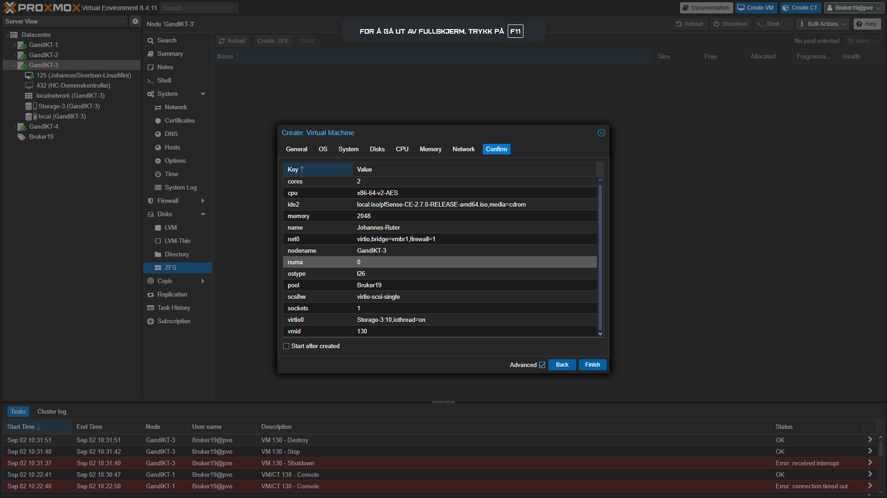
VM-spesifikasjoner som ble valgt:
- Navn: Johannes-Ruter
- RAM: 2 GB (2048 MB)
- CPU: 2 kjerner
- Disk: 10 GB (VirtIO Block)
- ISO: pfSense-CE-2.7.2-RELEASE-amd64.iso
Dette skjermbildet viser at pfSense-installasjonsprosessen er fullført og systemet er klart for initial konfigurering.
2VM-konfigurering - Bekreftelse
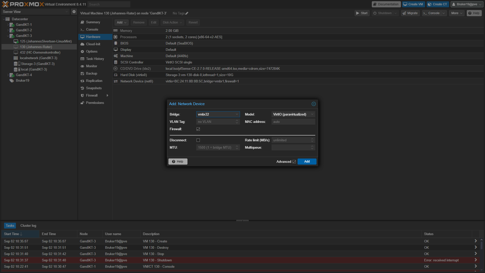
Viktige konfigurasjoner som bekreftes:
- cores: 2
- cpu: x86-64-v2-AES
- memory: 2048 MB
- name: Johannes-Ruter
- ostype: l26 (Linux 2.6+)
- scsi0: Storage-3-vm-130-disk-0 (10G)
Denne oversikten sikrer at alle innstillinger er korrekte før VM-en opprettes.
3Nettverkskonfigurasjon
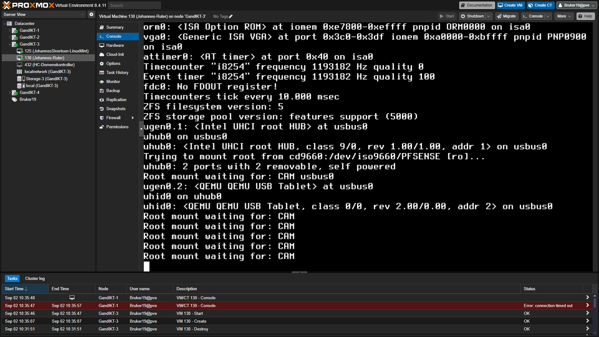
Nettverksoppsett:
- Bridge: vmbr22
- Model: VirtIO (paravirtualized)
- MAC address: Auto-generert
- Firewall: Aktivert
Hvorfor to nettverkskort?
- Ett for WAN (internett-tilkobling)
- Ett for LAN (lokalt nettverk)
- Separering sikrer riktig nettverkssegmentering
4Oppstart og boot-prosess
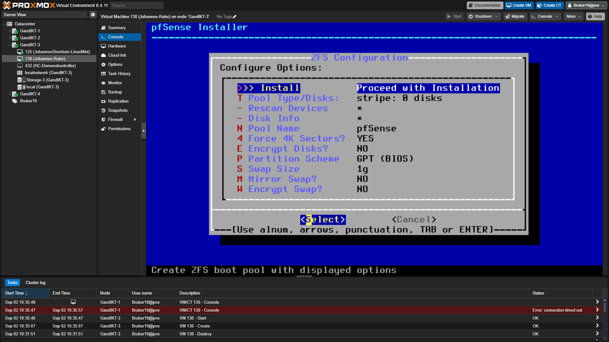
Boot-prosess forklart:
- Hardware-deteksjon: CPU, minne og nettverkskort identifiseres
- USB og storage: Disker og USB-enheter lastes
- Network interfaces: vtnet0 og vtnet1 detekteres
- Root mount: Filsystem monteres fra ISO
Dette stadiet viser at hardware-deteksjonen fungerer korrekt og systemet er klar for installasjon.
5pfSense Installer
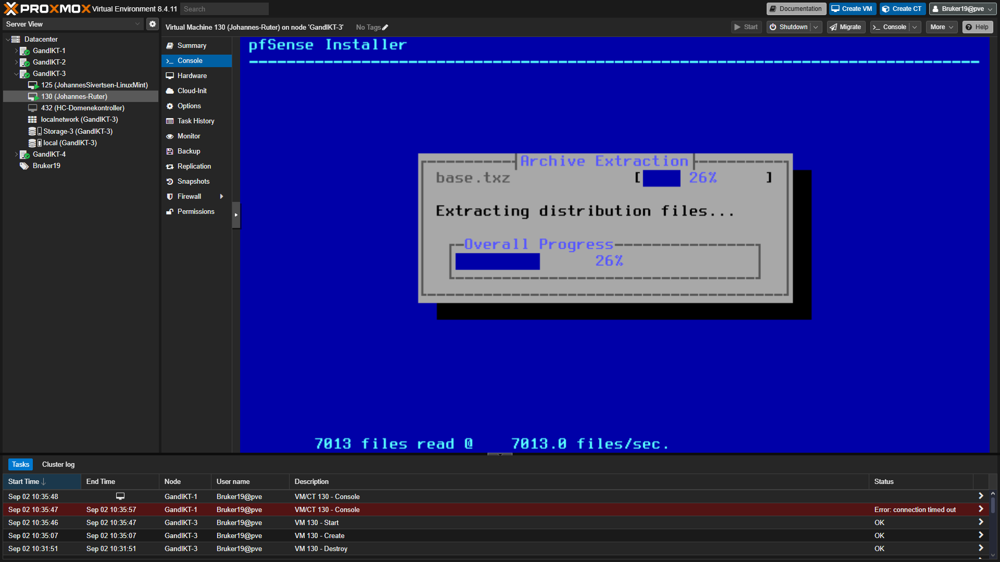
Installasjonalternativer:
- Install: Hovedalternativet for permanent installasjon
- Pool Type/Disks: stripe: 0 disks (enkelt disk)
- Pool Name: pfSense
- Partition Scheme: GPT (BIOS)
- Swap Size: 1g
Standard innstillinger er optimale for de fleste installasjoner. GPT-partisjonering gir bedre kompatibilitet.
6Installasjonsprosess
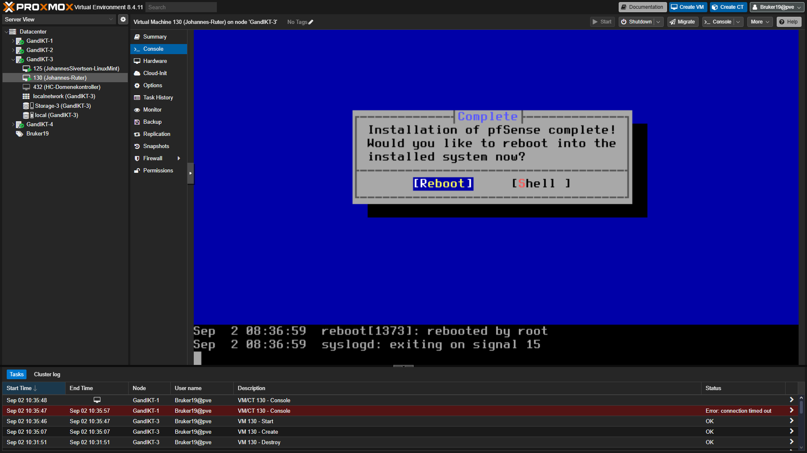
Hva skjer under installasjon:
- Archive Extraction: base.txz pakkes ut
- Progress: 26% fullført (7013 av 7013 filer)
- Hastighet: 7013.0 files/sec
Installasjonssteg:
- Partisjonering av disk
- Formatering av filsystem
- Utpakking av systemfiler
- Konfigurasjon av bootloader
7Installasjon fullført
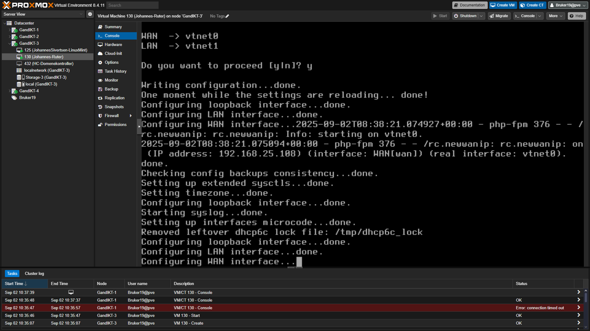
Installasjon fullført:
- Status: "Installation of pfSense complete!"
- Valg: Reboot eller Shell
- Anbefaling: Velg Reboot for å starte systemet
Neste steg:
- Fjern ISO-filen fra CD/DVD-stasjonen i Proxmox
- Start VM-en på nytt
- Systemet vil nå starte fra harddisken
8Første oppstart etter installasjon
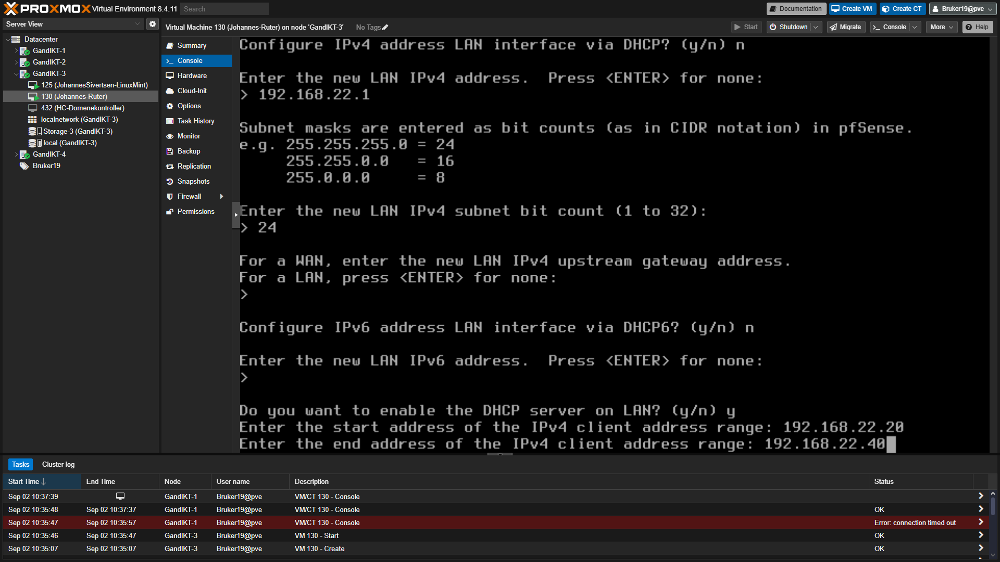
Nettverksgrensesnitt-tildeling:
- WAN → vtnet0: Første nettverkskort (til internett)
- LAN → vtnet1: Andre nettverkskort (til lokalt nettverk)
Automatiske prosesser:
- Konfigurering av loopback-grensesnitt
- LAN og WAN grensesnitt konfigureres
- DHCP-klient aktiveres på WAN
- Syslog og andre systemtjenester startes
9IP-adresse konfigurasjon
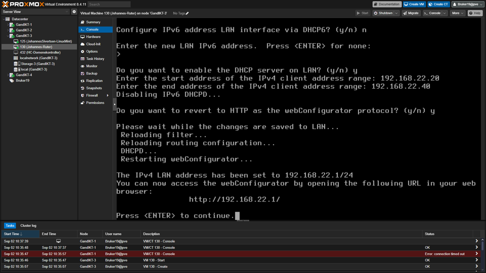
LAN IP-konfigurasjon:
- IP-adresse: 192.168.22.1
- Subnet mask: 24 (255.255.255.0)
- Gateway: Ikke nødvendig for LAN
DHCP-server oppsett:
- Aktiver DHCP: Ja
- Start-adresse: 192.168.22.20
- Slutt-adresse: 192.168.22.40
Dette gir automatisk IP-adresser til enheter som kobler seg til LAN-nettverket.
10DHCP-server konfigurasjon
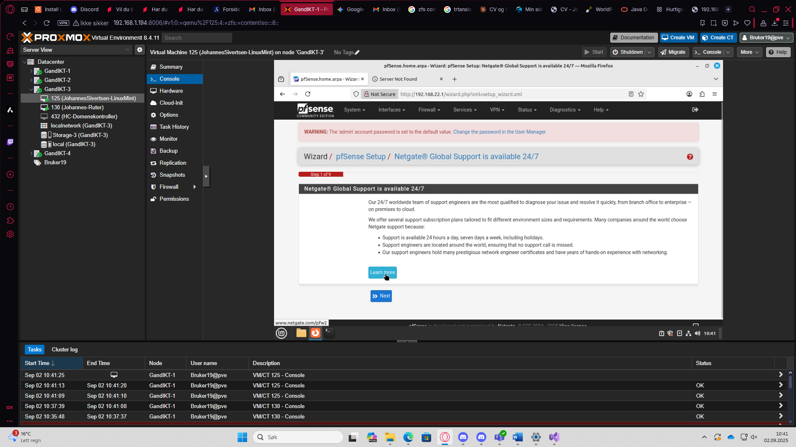
DHCP-konfigurasjon fullført:
- IPv6 DHCP: Deaktivert
- HTTP WebConfigurator: Aktivert
- Filtersystem: Lastes inn på nytt
- Routing: Konfigureres
Tilgang til web-grensesnitt:
- URL: http://192.168.22.1/
- WebConfigurator er nå tilgjengelig
- Systemet er klart for fjernkonfigurasjon
11Web-basert konfigurering
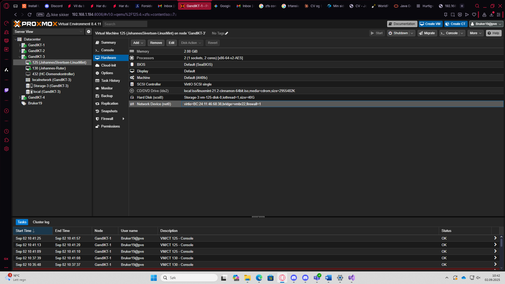
Web-grensesnitt aktivert:
- Tilgang: Via https://192.168.22.1
- Standard innlogging: admin / pfsense
- Setup Wizard: Starter automatisk
Netgate Global Support:
- 24/7 verdensomspennende støtte tilgjengelig
- Profesjonelle nettverksingeniører
- Sertifiseringer og års erfaring
- Valgfri støtteabonnement
12Hardware-oversikt
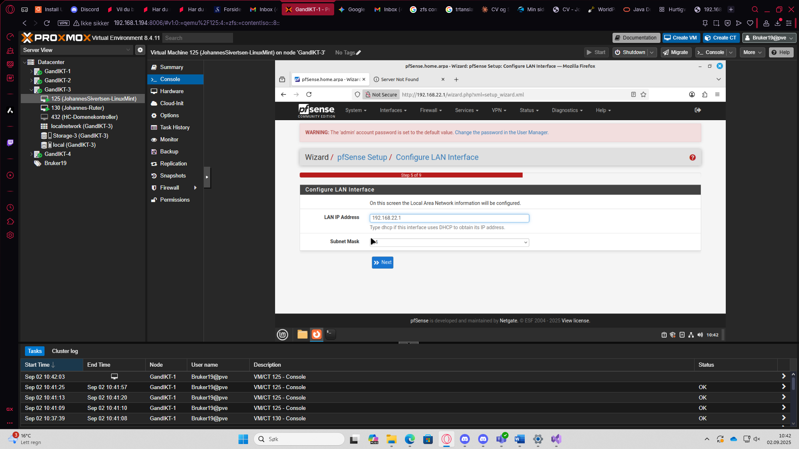
VM Hardware-konfigurasjon bekreftet:
- Memory: 2.00 GiB
- Processors: 2 (1 sockets, 2 cores)
- BIOS: Default (SeaBIOS)
- Display: Default
- Machine: Default (i440fx)
- SCSI Controller: VirtIO SCSI single
Lagring og nettverk:
- Hard Disk: Storage-3-vm-130-disk-0 (10G)
- Network Device: virtio-BC-24-11:86:68:38 (vmbr22)
13LAN-grensesnitt konfigurasjon
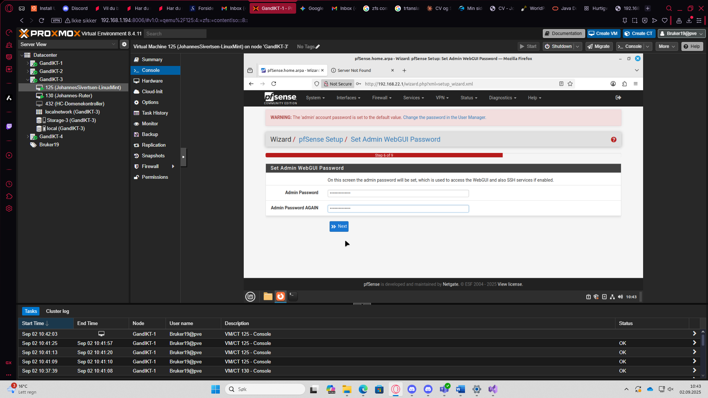
Web-wizard for LAN-konfigurasjon:
- LAN IP Address: 192.168.22.1
- Subnet Mask: 24 (dropdown-meny)
- Steg 5 av 9: Configure LAN Interface
Web-grensesnitt fordeler:
- Intuitivt grafisk brukergrensesnitt
- Validering av inndata
- Dropdown-menyer for vanlige verdier
- Trinn-for-trinn wizard
14Administrator-passord
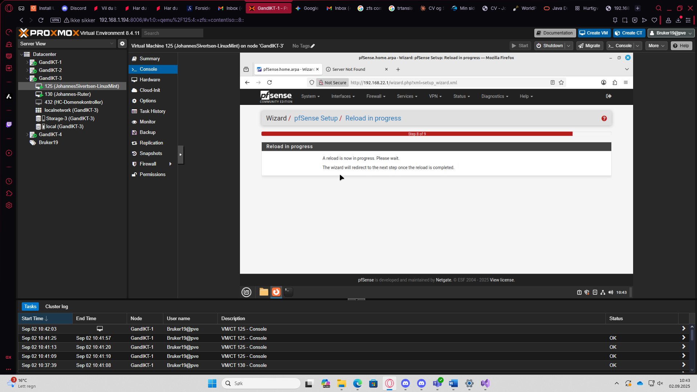
Sikkerhetsoppsett:
- Admin Password: Skjult inndatafelt
- Admin Password AGAIN: Bekreftelsesfeld
- Steg 6 av 9: Set Admin WebGUI Password
Viktigheter ved passord:
- Sterkt passord: Bruk kombinasjon av store/små bokstaver, tall og symboler
- Ikke del: Hold passordet hemmelig
- Dokumenter sikkert: Lagre på trygt sted
15Konfigurasjon lastes inn
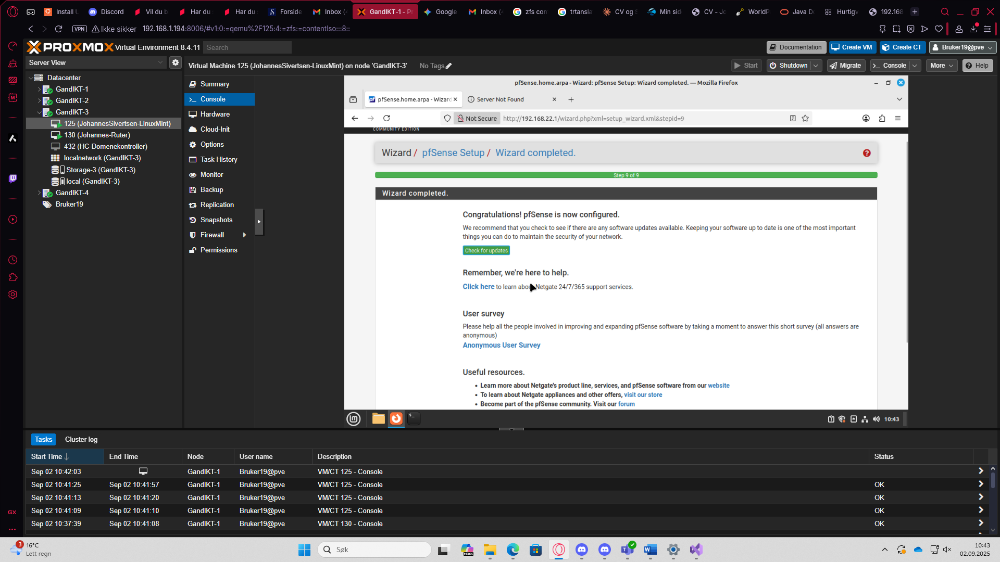
Reload-prosess:
- Status: "A reload is now in progress. Please wait."
- Automatisk redirect: Går til neste steg når ferdig
- Steg 8 av 9: Nesten fullført
Hva skjer under reload:
- Nye passord-hash genereres
- Nettverkskonfigurasjon aktiveres
- Tjenester startes på nytt
- Brannmur-regler lastes
Gratulerer! pfSense-ruteren er klar
Det du har oppnådd:
- Fullstendig pfSense-installasjon i Proxmox VM
- Konfigurert nettverksgrensesnitt (WAN og LAN)
- Aktivert DHCP-server for automatisk IP-tildeling
- Satt opp web-grensesnitt for fjernkonfigurasjon
- Sikret admin-tilgang med sterkt passord
Neste steg du kan utforske:
- Konfigurer brannmur-regler
- Sett opp VPN-tilgang
- Overvåk nettverkstrafikk
- Konfigurer avanserte nettverkstjenester
- Test tilkobling fra LAN-klienter
Viktige sikkerhetsnotater:
- Hold admin-passordet hemmelig
- Oppdater pfSense jevnlig
- Overvåk systemlogger